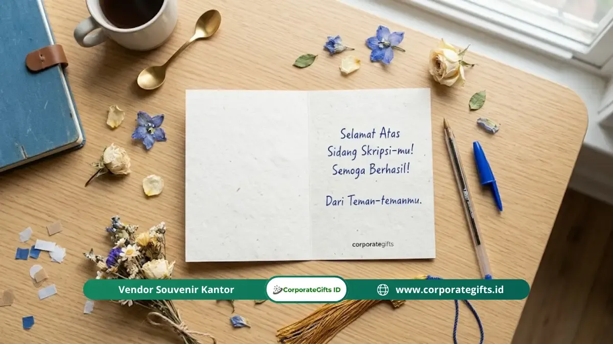

Corporate Gifts ID - Bingkai foto personal yang dipadukan dengan kartu ucapan tulis tangan merupakan kado sidang skripsi paling bermakna dan tahan lama. Kombinasi ini sangat efektif karena menggabungkan kenangan visual yang dapat dipajang setiap hari dengan kata-kata jujur yang hanya bisa ditulis oleh satu orang di dunia ini, sehingga penerima merasakan kehadiran tulus pemberi setiap kali melihatnya.
Poin Kunci Kado Sidang Skripsi Sentimental:
- Kehadiran Permanen: Bingkai foto personal memajang kenangan di meja kerja atau kamar penerima setiap hari tanpa memerlukan daya baterai atau layar digital.
- Nilai Emosional Otentik: Kartu ucapan tulis tangan membawa bukti fisik bahwa pemberi benar-benar meluangkan waktu dan pikiran untuk merangkai kata.
- Kado Dua Dimensi: Menggabungkan memori visual yang dilihat mata dengan narasi emosional yang dibaca berulang kali.
- Kurasi Momen Spesifik: Foto terbaik adalah foto candid perjuangan nyata selama masa kuliah, bukan sekadar foto formal wisuda yang standar.
- Investasi Emosional Tinggi: Membuktikan bahwa cenderamata bernilai mendalam tidak harus berbiaya mahal, melainkan bergantung pada ketulusan personalisasi.
Mengapa Bingkai Foto dan Kartu Tulis Tangan Menjadi Kombinasi Kado yang Kuat?
Bingkai foto dan kartu tulis tangan menjadi kombinasi kado yang kuat karena keduanya menyentuh dua saluran emosi berbeda secara bersamaan, yaitu penglihatan yang merangkum kenangan visual dan untaian kata yang mengungkapkan perasaan mendalam yang mungkin belum pernah terucap secara lisan.
Bingkai foto bekerja melalui memori visual. Setiap kali penerima menatap bingkai tersebut di meja kerja atau dinding kamar, pikiran memutar kembali momen yang terpotret beserta perasaan bangga yang menyertainya.
Sementara itu, kartu tulis tangan bekerja melalui kata-kata yang dikenali sebagai benar-benar personal karena goresan pena setiap orang memiliki karakter unik. Ketika membaca kalimat yang tertulis tangan, otak memproses pesan tersebut secara jauh lebih intim dibanding teks digital di layar ponsel pintar.
Foto Apa yang Paling Tepat untuk Bingkai Kado Sidang Skripsi?
Foto terbaik untuk bingkai kado sidang skripsi adalah foto yang menceritakan momen spesifik antara pemberi dan penerima, bukan foto studio kaku yang bisa dimiliki siapa saja. Berikut kurasi jenis foto yang paling berkesan:
1. Foto Bersama di Momen yang Hanya Diingat Berdua
Misalnya foto saat begadang di perpustakaan menyelesaikan bab pembahasan, foto di kantin favorit saat berdiskusi santai, atau momen spontan di sudut kampus yang sarat nostalgia.
2. Foto Spontan dari Hari Sidang Itu Sendiri
Potret candid saat penerima baru saja melangkah keluar dari ruang sidang dengan ekspresi lega bercampur bahagia. Foto ini tidak dituntut sempurna secara teknis pencahayaan, justru kealamian momen tersebut yang menjadikannya sangat bernilai.

Sentuhan tulisan tangan personal pada kartu ucapan melengkapi kehangatan bingkai foto kenangan masa kuliah.
3. Foto Kolase yang Merangkum Perjalanan Panjang
Konsep yang sangat menyentuh adalah menyandingkan foto hari pertama ospek mahasiswa baru dengan foto sesaat setelah dinyatakan lulus sidang skripsi dalam satu susunan bingkai kolase (before-after).
4. Foto Detail Kecil Penuh Makna
Misalnya foto tangan penerima yang memegang lembar pengesahan naskah skripsi berjilid tebal, foto papan pengumuman jadwal ujian, atau tumpukan buku referensi penelitian.
Bagaimana Cara Menulis Kartu Ucapan Tulis Tangan yang Menyentuh Hati?
Kartu ucapan tulis tangan yang menyentuh hati lahir dari tiga elemen utama: kenangan spesifik yang dialami bersama, pengakuan jujur atas kegigihan konkret penerima, dan doa harapan tulus untuk fase karier berikutnya.
Hindari menulis pesan klise layaknya template broadcast, seperti sekadar menulis "Selamat ya! Sukses selalu ke depannya." Gunakan struktur tiga langkah berikut untuk menyusun pesan yang membekas di hati:
- Bagian 1: Buka dengan Kenangan Spesifik: Sebutkan satu momen nyata yang pernah dihadapi bersama, seperti perjuangan merevisi kuesioner penelitian di malam hari.
- Bagian 2: Akui Kualitas dan Daya Juang Pribadi: Utarakan karakter positif penerima yang Anda kagumi, misalnya keteguhan mentalnya untuk tidak menyerah saat menghadapi revisi rumit dari dosen pembimbing.
- Bagian 3: Sampaikan Harapan yang Konkret: Sampaikan harapan spesifik selaras dengan aspirasi karier masa depan penerima. Cukup tuliskan 10 hingga 20 baris kalimat yang padat dan jujur.
Bagaimana Cara Memilih Bingkai Foto yang Tepat untuk Kado Sidang Skripsi?
Pertimbangkan konsep estetika dekorasi ruangan penerima, dimensi ukuran cetak, serta fitur personalisasi saat menentukan bingkai foto yang ideal:
- Pilihan Material Karakter: Bingkai kayu jati belanda atau pinus bernuansa natural sangat cocok untuk penyuka konsep minimalis/rustic. Bingkai aluminium metalik memberi kesan modern industrial, sementara bingkai akrilik transparan (frameless acrylic) memberikan impresi kontemporer yang elegan.
- Ukuran Cetak Proporsional: Dimensi ukuran 4R (10x15 cm) atau 5R (13x18 cm) adalah ukuran paling ideal untuk meja kerja atau nakas tempat tidur tanpa menyita ruang.
- Area Ukir Personal (Custom Engraving): Pilih bingkai yang menyediakan ruang kosong pada bezel untuk digrafir laser berupa nama penerima, gelar akademik baru, dan tanggal kelulusan sidang.
- Dukungan Dudukan Fleksibel: Pastikan bagian belakang bingkai dilengkapi kaki penopang meja sekaligus gantungan dinding serbaguna.
Berapa Harga Bingkai Foto Custom untuk Kado Sidang Skripsi?
Pengadaan bingkai foto kado kelulusan di Indonesia sangat terjangkau dengan rentang harga bervariasi bergantung pada spesifikasi bahan dan tingkat kustomisasi yang diaplikasikan.
| Tipe Bingkai Foto | Kisaran Harga | Karakteristik & Keunggulan |
|---|---|---|
| Bingkai Kayu Standar Non-Custom | Rp20.000 - Rp60.000 | Ekonomis, simpel, profil warna kayu natural |
| Bingkai Kayu Grafir Laser Nama & Gelar | Rp70.000 - Rp150.000 | Sangat personal, ukiran presisi nama dan tanggal sidang |
| Bingkai Akrilik Magnetik Transparan | Rp80.000 - Rp180.000 | Tampilan modern mewah, sudut bevel polished, dua sisi |
| Bingkai Kolase Multi-Foto (Collage Frame) | Rp50.000 - Rp120.000 | Memuat 3-4 foto perjalanan studi sekaligus |
Kesimpulan Praktis
Bingkai foto personal yang disandingkan dengan kartu ucapan bertuliskan tangan membuktikan bahwa hadiah paling berharga tidak diukur dari mahalnya harga, melainkan dari kedalaman makna dan ketulusan perhatian di baliknya. Cenderamata ini memiliki nilai abadi, tidak akan pernah usang, dan akan selalu menghadirkan senyum syukur di setiap momen penerima memandangnya.
Jelajahi pula aneka inspirasi suvenir akademik, paket bingkisan wisuda kampus, dan gift set kelulusan eksklusif lainnya di direktori lengkap Corporate Gifts ID.
Pertanyaan Seputar Kado Sidang Skripsi (FAQ)

Ditulis oleh: Arinda Zakia
Senior Corporate Gifting SpecialistSpesialis strategi merchandise korporat, kurasi hadiah B2B, dan manajemen pengadaan souvenir institusi dengan pengalaman lebih dari 7 tahun mendampingi ratusan perusahaan di Indonesia.
Lihat Profil Lengkap & Panduan Lainnya